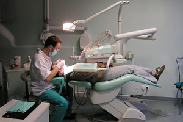

About Me

Education
In 1992, I graduated from the Medical Academy. M. Copernicus University in Krakow at the Faculty of Dentistry. In 1997, I obtained the Io specialization in general dentistry and in 2001, I obtained the IIo specialization in dental prosthetics.
Work
From 1993 to 1998 I worked at the 5th Military Clinical Hospital in Krakow and since 1994 I have been working in my own dental practice.

Office
In 2000, the practice was moved to its own premises at 4 Mieszczańska Street (Podwawelskie estate). I invite you to visit a dental office that was created primarily with you in mind.
Services
Dental prevention
sealing teeth
fluoridation
removal of plaque and tartar
treatment of tooth hypersensitivity
Dentistry
treatment of tooth decay
treatment of dental injuries
biological treatment of dental pulp
endodontic treatment of teeth
Dental prosthetics
removable and fixed dentures
crown inlays (inlay, onlay), crown-root inlays, all-ceramic crowns, bridges
treatment of pathological tooth wear
treatment of temporomandibular joint disorders
Dental surgery
tooth extraction
usuwanie removal of left roots
resection
radectomy
hemisections
treatment of post-extraction complications
implants
Aesthetic dentistry
teeth whitening
tooth shape correction
treatment
removal of discolorations